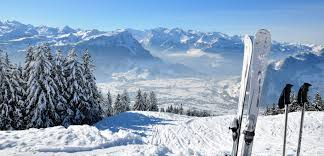

Winter activities
Stowe is known for its mountainous landscape and outdoor activities, especially skiing and snowboarding. But, Stowe is much more than skiing in winter; there is something to do in winter, no matter your interest or age. Snow or not, the choices are vast!
- Sunrise Mountain Guides (tel:802-253-2062) is the local experts in outdoor recreation and adventure, Sunrise Mountain Guides offers beautiful and exciting winter adventures including backcountry skiing, cross-country skiing, ice climbing, mountaineering and snowshoeing. Located at the base of Mount Mansfield, Vermont highest peak, they provide easy access to the recreational opportunities in our backyard. In business for nearly 20 years, all of the guides are lifelong locals with a wealth of knowledge and fun!
-
Dog sledding has gained in popularity over the last few years and is now being done in and around Stowe. Bred for endurance, speed, and friendliness, sled dogs enthusiastically pulling passengers on exhilarating rides. Their energy and excitement are undeniable, and their teamwork and strength are impressive.
Eden Mountain Dog Sledding (tel:802-635-9070) is a working dog sled farm and touring center surrounded by 3,000 acres of mixed protected Vermont wilderness, with ten miles of private trails that are set aside exclusively for dog sledding. Meet and get to know the free-range huskies and mixed breed dogs, help harness and hitch up, and even try driving the team. All rides require advance registration.
Peace Pups (tel:802-253-3656) dog sledding offers twilight dog sledding tours at the base of Stowe Mountain Resort. See the ski slopes of Stowe Mountain Resort in a whole new way while being pulled in a hand-built sled by a regal team of huskies.
- Cross Country Skiing, while Stowe is best known for downhill skiing and snowboarding, it is also home to miles of trails for Nordic skiers. Because Nordic skiing requires only a few inches of snow, the season starts earlier and often ends later.
Stowe Mountain Resort Cross Country Center (tel:802-253-3688). This quaint little center features 42 kilometers of groomed trails along with 40 kilometers of high-elevation backcountry trails in the Mount Mansfield State Forest. Group and individual lessons are offered daily.
The best package is the Introduction to Skiing, which includes a 90-minute lesson, equipment, and trail fee. On weekends and holidays, ski out to the little Bear Hut to warm up next to the warm wood stove and sip free hot chocolate!
- Ice Skating
Spruce Peak Village Center (tel:888.478.6938). For those who enjoy taking to the ice and showing off their skating skills, the newest rink in Stowe is a must-try! The Spruce Peak Village Center offers skate rentals for those who are swinging by for a session. This open-air ice rink is great to visit in the evening when the twinkling lights of the Spruce Camp Base Lodge illuminate the area, making ice skating in Stowe a magical moment.
Stowe Arena (tel:802-253-3721). The Stowe Arena features ice from June through March, with stick time and public skating offered daily, and is home to the Stowe High School Raiders boys and girls hockey teams, Stowe Youth Hockey, North American Hockey Academy, and many other local and regional teams of all ages. Skates are available for rent and beginner skaters can use cones and crates for assistance with balance.
Reserve your Skis/Snowboard on line with our partner AJ's Ski & Sports:
Skis and Snowboard Rental

top